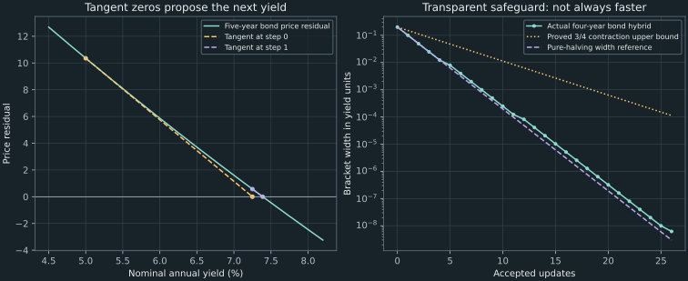

11. Newton, secant, and safeguarded calibration
For the five-year bond priced at 98.40, a tangent-based update moves a yield guess from 5% to approximately 7.2493948% in one step. Four updates reach approximately 7.3885494486%, with a price residual near floating-point precision. Yet the same Newton rule applied to $x^3-2x+2$ from zero cycles forever between zero and one, despite nonzero derivatives at both points. Fast local convergence and reliable global progress are different properties.
We derive Newton's method, replace its derivative by a secant slope, and then retain a sign bracket around faster proposals. The week-4 workshop supplies a fresh bond and an option-volatility inversion. Throughout, report the stopping rule and evaluation costs: a price-residual threshold is not the same target as Chapter 10's bracket-width threshold.
Source spine: recording 31, Newton's method, recording 32, secant, hybrid strategies and conditioning, and recording 34, worked problems. Local convergence arguments, explicit safeguard contraction, failure cases, scale analysis, and consistent paired-strike sensitivity inputs are elaborations. The complete companion reuses the public Chapter 8 and 10 modules.
11.1 Use the zero of a local tangent as a proposal Recording 31, 1:40
Let $f(x)=0$ be the scalar inverse equation and $x_n$ the current guess. For a small correction $h$, first-order Taylor approximation gives $f(x_n+h)\approx f(x_n)+f'(x_n)h$. Set that affine approximation equal to zero, assuming $f'(x_n)\ne0$. Solving for $h$ yields Newton's update:
\[ h_n=-\frac{f(x_n)}{f'(x_n)},\qquad x_{n+1}=x_n-\frac{f(x_n)}{f'(x_n)}.\tag{11.1} \]Geometrically, the tangent at $(x_n,f(x_n))$ intersects the horizontal axis at $x_{n+1}$. It is the zero of an approximation, so evaluate the actual $f$ again at the proposed point. The tangent need not predict a valid model parameter or move toward the desired root when the guess is far away.
For a bond residual $f(y)=P(y)-P_{\mathrm{quoted}}$, the derivative is the price derivative derived in Chapter 10. The residual has price units and the derivative has price-per-yield units, so their ratio is a yield correction. We use $-P'(y)>0$ as a positive price sensitivity here. Duration's normalization, notional scaling, and basis-point conventions are developed in Chapter 13; a negative derivative should not be assigned a positive risk-measure label without its convention.
For the five-year, 7%-coupon, semiannual bond with full price 98.40, keep every intermediate yield rather than feeding rounded displayed yields back into the formula. With initial $y_0=0.05$ and price-residual tolerance $10^{-10}$, execution gives:
| Updates completed | Nominal annual yield $y$ | Computed price residual |
|---|---|---|
| 0 | 0.050000000000 | 10.352063930971 |
| 1 | 0.072493947965 | 0.569428584241 |
| 2 | 0.073880634479 | 0.001981814264 |
| 3 | 0.073885494427 | $2.422\times10^{-8}$ |
| 4 | 0.073885494486 | $1.137\times10^{-13}$ |
These four updates require five price evaluations and four derivative evaluations in the companion. Chapter 10's 25 halvings targeted a yield interval of width $10^{-8}$ instead. The rows demonstrate rapid convergence on this input; they are not a matched-tolerance runtime benchmark. Nearly identical displayed yields can have different residuals because their unprinted digits differ.
Newton needs derivative information, but not necessarily a symbolic closed-form formula. A derivative can also come from differentiating executable arithmetic or from a controlled numerical approximation. Accuracy, differentiability, and evaluation costs then matter; a finite-difference derivative through a kinked or noisy pricing routine need not preserve the ideal local convergence rate. Secant iteration offers a different way to reuse already available price values.
11.2 Prove the local rate and inspect its failure boundaries Recording 31, 4:02
Let $\alpha$ be a simple root: $f(\alpha)=0$ and $f'(\alpha)\ne0$. Assume $f$ is twice continuously differentiable near it. Write error $e_n=x_n-\alpha$. Taylor's theorem about $x_n$, evaluated at $\alpha$, gives a point $\xi_n$ between them such that
\[ 0=f(x_n)-f'(x_n)e_n+\tfrac12 f''(\xi_n)e_n^2. \tag{11.2} \]Divide by $f'(x_n)$ and substitute the Newton update. The resulting exact local error relation is
\[ e_{n+1}=\frac{f''(\xi_n)}{2f'(x_n)}e_n^2.\tag{11.3} \]To establish convergence rather than merely display an error formula, choose a small closed neighborhood $I$ of $\alpha$ on which $|f'|\geq m>0$ and $|f''|\leq M$. Continuity and the nonzero derivative at the root permit this. Put $K=M/(2m)$ and choose its radius $\delta$ small enough that $K\delta<1$. If $|e_n|\leq\delta$, then $|e_{n+1}|\leq K|e_n|^2\leq K\delta|e_n|<|e_n|$ unless the root is already reached. Hence the next iterate stays in $I$, the errors contract to zero, and the sharper squared-error bound applies at every subsequent step.
This is local quadratic convergence. When $f''(\alpha)\ne0$, its asymptotic constant is $|f''(\alpha)/(2f'(\alpha))|$. Roughly doubling the number of correct digits describes that asymptotic regime, not an unconditional digit count from any starting point. An affine function reaches its root in one update; a vanishing second derivative can give faster local behavior. Floating-point evaluation eventually limits the observable improvement. The NIST DLMF Newton section gives the standard simple-root and multiplicity context.
A repeated root changes the rate
For $f(x)=(x-\alpha)^p$ with integer $p>1$ and $x\ne\alpha$, (11.1) simplifies to $e_{n+1}=(1-1/p)e_n$. The decay is linear, not quadratic. For $f(x)=x^2$ from $x_0=1$, the errors are $1,1/2,1/4,1/8,\ldots$. With residual tolerance $10^{-12}$, the companion stops after 20 updates at approximately $9.536743\times10^{-7}$, whose squared residual is approximately $9.094947\times10^{-13}$. This is another example of a small residual not promising equally small parameter error.
Nonzero derivatives do not imply global convergence
For $f(x)=x^3-2x+2$, starting at zero gives $x_1=0-2/(-2)=1$ and then $x_2=1-1/1=0$. The cycle repeats. Neither visited derivative vanishes. The local theorem did not assert that zero lies in the attraction neighborhood of a root. The companion demonstrates the cycle and reports an exhausted update budget rather than declaring convergence.
There are other failures: a computed derivative can be zero; a ratio can become nonfinite; a proposed yield can cross the domain boundary $y=-2$; or rounding can leave $x_{n+1}=x_n$ while the residual remains too large. Starting the running bond at nominal yield 2 triggers a domain-escape failure in the companion. A monotone bond price and a unique root do not by themselves constrain every unrestricted tangent proposal.
Use both a finite update budget and explicit evaluation/domain checks. A for loop is convenient for counting a budget, but the syntax is not the guarantee: a bounded while loop could implement the same policy, and even bisection needs finite-precision progress checks. Testing an evaluated derivative for exact zero is a legitimate division-safety check. It is different from treating two approximate mathematical answers as equal; near-zero scale and input sensitivity require the further analysis in §11.6.
11.3 Reuse two prices to estimate a slope Recording 32, 0:16
The secant method replaces $f'(x_n)$ by the slope through two distinct recent points, $[f(x_n)-f(x_{n-1})]/(x_n-x_{n-1})$. Inserting this into (11.1) gives
\[ x_{n+1}=x_n-f(x_n)\frac{x_n-x_{n-1}}{f(x_n)-f(x_{n-1})}. \tag{11.4} \]The secant line's horizontal-axis intercept is the next proposal. Its two starting guesses need not have opposite signs, so they are not automatically a bracket. The proposal may leave their interval or the financial domain. A near-flat secant and nearly indistinguishable function values can also make the correction unreliable.
Cache the two function values. After proposing a new point, retain the more recent old pair and evaluate only the new function value. There are two startup evaluations and then one new evaluation per update, rather than recomputing both old prices in every loop. The following executable miniature illustrates that bookkeeping on prevalidated scalar inputs; the companion adds finite/type/domain checks, a relative denominator guard, and stagnation reporting.
import math
def secant_demo(function, x0, x1, ftol, max_updates):
f0, f1 = function(x0), function(x1)
for update in range(max_updates + 1):
if abs(f1) <= ftol:
return x1
if update == max_updates:
break
difference = f1 - f0
if difference == 0:
raise ArithmeticError("Zero evaluated secant denominator")
trial = x1 - (f1 / difference) * (x1 - x0)
x0, f0 = x1, f1
x1, f1 = trial, function(trial)
raise RuntimeError("Update budget exhausted")
def residual(x):
return x * x - 2
answer = secant_demo(residual, 1.0, 2.0, 1e-10, 30)
assert abs(answer - math.sqrt(2)) < 1e-10
print(f"Secant example: {answer:.12f}")
Derive the product-of-errors relation
For distinct arguments define divided differences $f[x,y]=(f(x)-f(y))/(x-y)$ and $f[x,y,z]=(f[x,y]-f[x,z])/(y-z)$, extended by limits when arguments coincide. Subtract the root $\alpha$ from (11.4), use $f(x_n)=e_nf[x_n,\alpha]$, and collect terms:
\[ \begin{aligned} e_{n+1} &=e_n\frac{f[x_n,x_{n-1}]-f[x_n,\alpha]}{f[x_n,x_{n-1}]}\\ &=e_ne_{n-1}\frac{f[x_n,x_{n-1},\alpha]}{f[x_n,x_{n-1}]}. \end{aligned}\tag{11.5} \]On the smooth neighborhood used for Newton, the mean value theorem bounds the denominator magnitude below by $m$. The three-point divided difference equals $f''(\xi)/2$ for an intervening point: interpolate the three values by a quadratic, then apply Rolle's theorem twice to the difference between $f$ and that interpolant. Its second derivative is the constant twice the second divided difference. Hence $|e_{n+1}|\leq[M/(2m)]|e_ne_{n-1}|$. Two sufficiently close starting errors with $K\delta<1$ therefore stay in the neighborhood and contract to zero, assuming distinct iterates until a root is reached.
In the nondegenerate asymptotic case $f''(\alpha)\ne0$, the ratio in (11.5) tends to $C=f''(\alpha)/(2f'(\alpha))$. Thus $e_{n+1}\sim Ce_ne_{n-1}$. If the regular asymptotic error law is $|e_n|\sim A|e_{n-1}|^p$, substitution makes the powers agree only when $p=1+1/p$, so
\[ p^2-p-1=0,\qquad p=\frac{1+\sqrt5}{2}.\tag{11.6} \]This explains the golden-ratio order quoted in the lecture and NIST DLMF's secant discussion. The local error bound establishes attraction; the regular nondegenerate asymptotic relation explains that order. Neither is a global guarantee. An affine function can be solved in one secant update, and a multiple or nonsmooth root need not follow this regime.
The full program rejects an exactly zero or nonfinite function difference and differences too small relative to the magnitudes of the two function values. That relative guard avoids a universal threshold with unspecified price units. It is a division safeguard, not a bound on noise in the underlying pricing routine. When price-evaluation error is material, its scale must also inform the stopping and slope decisions. Without a valid bracket, neither a finite step nor a tiny change in successive parameter values proves that a root was found.
11.4 Keep the bracket while trying a faster step Recording 32, 17:00
Assume a continuous function with reliable opposite endpoint signs on a valid interval $[a,b]$. A bracket safeguards the region containing a root; a tangent or secant merely proposes a trial. To make that distinction explicit, our teaching hybrid follows four rules.
- Keep both endpoint values and choose the endpoint with smaller absolute residual as the current best point.
- If derivative information is supplied, try its Newton proposal. Otherwise try a secant proposal through the bracket endpoints.
- Accept that proposal only if it is finite and lies in the central half, $[a+W/4,b-W/4]$, where $W=b-a$. If it fails this test, use the midpoint.
- Evaluate the actual function and retain the sign-changing subinterval. Report the selected stopping condition and the remaining bracket.
A usable derivative is not required for progress: an unusable derivative proposal falls back to the midpoint. A nonfinite price evaluation at the trial is different; it violates the valid-function assumptions and is reported as a failure rather than assigned an invented sign.
The acceptance band supplies a short convergence proof. Any accepted trial $t$ lies at least $W/4$ from either endpoint. Whichever subinterval retains the sign change has width at most $3W/4$. The fallback midpoint leaves width $W/2$. Therefore, unless the algorithm terminates earlier by its residual or computed-zero rule,
\[ W_{k+1}\leq\tfrac34W_k,\qquad W_k\leq(3/4)^kW_0. \tag{11.7} \]The root-retention invariant comes from continuity and the signs; the contraction bound comes from the acceptance geometry. In exact arithmetic it reaches a positive width target after finitely many updates. The actual program also checks finite arithmetic, representable progress, and an update budget, so the theoretical bound is not used to justify an unguarded infinite loop.
The companion permits separate width and price-residual stopping rules. Width stopping returns the midpoint of the retained interval. Residual stopping can return its best endpoint with a small computed price mismatch while the bracket is still wider than the width target. The stopping reason records the branch selected; a zero floating evaluation is still not a certificate of an exact mathematical root. Preserve the bracket instead of declaring that a small residual has made it narrow.
This deliberately conservative method is not a full implementation of Brent's algorithm. An excellent near-root Newton proposal can be close to an endpoint and fail the central-half test, causing extra bisections. On the workshop bond below, the teaching hybrid uses 26 updates to satisfy its residual criterion; its width history often lies above a pure-halving reference. That is evidence about this acceptance policy, not a universal runtime ranking among hybrid methods. It illustrates why a transparent guarantee and an efficient production policy are related but distinct design tasks.

Established libraries use more elaborate acceptance logic. The SciPy brentq documentation describes bracketed Brent iteration with bisection and inverse quadratic interpolation. R's uniroot documents its Netlib-based method, sign assumptions, tolerance, and convergence reporting. These are interface references here, not reported executions of either library.
When using such a call, inspect its convergence record and evaluate the residual under the declared financial model. For example, brentq(..., full_output=True) returns a root and a result object; uniroot returns fields including root, f.root, and iter, with check.conv=TRUE available to treat nonconvergence as an error. Library convenience does not erase the need for a valid bracket, units, or model domain. The SciPy Newton documentation also cautions that its step-based termination does not guarantee a root has been found.
11.5 Work both inverse problems with recorded stopping rules Recording 34, 1:42
The four-year coupon bond
The workshop's new bond has face 100, annual coupon rate 6%, semiannual payments, four years remaining, and full price 101.75. Its eight half-year payments are seven amounts of 3 followed by 103. With nominal annual yield $y>-2$, its residual is
\[ f(y)=\sum_{k=1}^{8}\frac{3}{(1+y/2)^k} +\frac{100}{(1+y/2)^8}-101.75.\tag{11.8} \]The undiscounted total cash flow is 124, so $f(0)=124-101.75=22.25$, correcting a brief arithmetic slip in the narration. The companion gives $f(0.20)\approx-39.094483385$, validating $[0,0.20]$. Its first midpoint 0.10 has residual approximately $-14.676425519$, so the retained interval is $[0,0.10]$; midpoint 0.05 then gives approximately 1.835068584, retaining $[0.05,0.10]$. The positive-payment uniqueness proof applies to this bond too.
Differentiating each discounted payment gives
\[ f'(y)=-\frac12\sum_{k=1}^{8}\frac{3k}{(1+y/2)^{k+1}} -\frac{400}{(1+y/2)^9}.\tag{11.9} \]The last derivative term is $-(8/2)100(1+y/2)^{-9}$, so the final coupon has not been confused with the principal. Starting Newton at $y_0=0.04$ and stopping at price residual $10^{-8}$ gives successive proposals approximately 0.054593206931, 0.055065311501, and 0.055065783596. The third update's residual is approximately $1.690\times10^{-10}$. The resulting yield is approximately 5.50657836% nominal annual, below the 6% coupon rate as expected for a price above par.
The two-month call's implied volatility
The separate call example uses $S_0=20000$, strike 20200, annual continuously compounded $r=0.055$, horizon $T=60/365$ years, 40 CRR steps, and declared price 576.77. These are workshop inputs, not authenticated live quotes. Define $g(\sigma)=C_{40}(\sigma)-576.77$. The interval $[0.05,0.40]$ passes the model-domain and opposite-sign checks. Secant guesses 0.12 and 0.25 need no derivative routine, but every proposal must still satisfy the positive-volatility/no-arbitrage domain.
| Secant point | Volatility parameter | Price residual |
|---|---|---|
| Initial 0 | 0.120000000000 | −195.629040090668 |
| Initial 1 | 0.250000000000 | 226.441964563631 |
| Update 1 | 0.180254731861 | 0.822892254912 |
| Update 2 | 0.180000352476 | −0.002418316318 |
| Update 3 | 0.180001097855 | $3.440\times10^{-8}$ |
| Update 4 | 0.180001097845 | $2.274\times10^{-13}$ |
Four updates after the two starts use six price evaluations and no derivative evaluations. The fitted parameter is approximately 18.00010978% per square-root year. The unrounded forward price at exactly 18% is slightly different from the workshop's two-decimal quote; the extra fitted digits describe that declared inverse equation, not additional precision in a real quote.
| Fixture and method | Stopping target | Updates/halvings | Price calls | Derivative calls | Final price residual |
|---|---|---|---|---|---|
| Bond, Newton | $|f|\leq10^{-8}$ | 3 | 4 | 3 | $1.690\times10^{-10}$ |
| Bond, bisection | Width $\leq10^{-8}$ | 25 | 28 | 0 | $-9.367\times10^{-8}$ |
| Call IV, secant | $|g|\leq10^{-8}$ | 4 | 6 | 0 | $2.274\times10^{-13}$ |
| Call IV, bisection | Width $\leq10^{-8}$ | 26 | 29 | 0 | $-8.224\times10^{-6}$ |
These are actual counts with different stated stopping targets, not a speed benchmark at equal accuracy. An analytic bond derivative may be accumulated along with the price in one cash-flow pass; a numerical option derivative may require extra lattice evaluations. Compare the cost and reliability of the full pricing/derivative pipeline rather than only the number of root updates. A bracketed method remains valuable when a fast unbracketed method fails, even if a particular successful starting guess makes Newton or secant much cheaper.
11.6 Separate equation scaling from input sensitivity Recording 32, 21:05 Recording 34, 24:32
Let the root depend on an input $a$ through $F(x(a),a)=0$. Assume the needed partial derivatives exist and $F_x\ne0$ at the root. Differentiating the identity gives $F_x\,dx/da+F_a=0$, hence
\[ \frac{dx}{da}=-\frac{F_a}{F_x}.\tag{11.10} \]For $F(\sigma,C_{\mathrm{quoted}})=C_{\mathrm{model}}(\sigma)-C_{\mathrm{quoted}}$, this becomes $d\sigma/dC_{\mathrm{quoted}}=1/C'_{\mathrm{model}}(\sigma)$. A small price slope in meaningful units can turn a small quote change into a large volatility change. The formula presumes local identification and differentiability; a flat interval such as Chapter 10's example does not supply a usable inverse derivative.
The raw magnitude of a derivative is not meaningful without the equation and perturbation scale. Replace $F$ by $cF$ for a nonzero constant $c$. Its roots stay fixed, Newton's ratio $(cF)/(cF_x)$ is unchanged, and the sensitivity $-(cF_a)/(cF_x)$ is unchanged. The price perturbation and residual tolerance must be rescaled consistently too. The companion rescales the workshop bond residual and derivative by $10^{-12}$ and its residual tolerance by the same factor; it recovers the same yield. A universal rule rejecting every derivative smaller than a dimensionless constant would incorrectly treat these equivalent formulations differently.
Compare two strikes with consistent generated prices
Use the workshop's $S_0=20000,r=0.055,T=60/365,n=40$, but now generate two call prices at a fixed $\sigma=0.18$ for strikes 20200 and 24000. This is a fresh internally consistent comparison, resolving ambiguity in the narration's rounded far-strike quote. Estimate each local price slope using a centered volatility bump $h=10^{-5}$, then independently reinvert prices one money unit below and above the generated quote.
| Strike | Generated quote at $\sigma=0.18$ | Local price slope | Reciprocal slope | IV at quote −1 | IV at quote +1 |
|---|---|---|---|---|---|
| 20200 | 576.766438093 | 3244.454649086 | 0.000308218209 | 0.179691785201 | 0.180308225378 |
| 24000 | 4.100790780 | 268.854935964 | 0.003719477927 | 0.174382574484 | 0.183742309734 |
The far-strike local inverse slope is much larger. A one-unit price perturbation is also a much larger fraction of its small quoted value. Its actual inverse interval is visibly asymmetric: the lower-price root moves more than a linear estimate using the slope at 0.18 would suggest. Finite-tree payoff regions and nonlinear slope changes matter over that wider move. A local finite difference is neither a global derivative bound nor a substitute for checking the actual price interval.
Both inversions can be numerically successful while their inferred parameters have different input sensitivity. Returning more digits or switching from bisection to secant does not change that mathematical property. For a quote pipeline, retain the date, bid/ask or other stated price uncertainty, contract details, and model conventions, then report the corresponding parameter interval or an identification failure where appropriate. Automatically discarding every distant strike would confuse a quality diagnosis with a universal financial rule.
Keep three categories separate. The finite binary representation behind $0.1+0.2\ne0.3$ concerns arithmetic rounding. Ill-conditioning concerns how a mathematical solution changes when its inputs change. Algorithmic instability concerns additional error introduced by the chosen computation. A stable solver cannot make an uninformative quote identify volatility; conversely, a well-conditioned root does not excuse a bad derivative, lost bracket, or stale data.
11.7 Match convergence assumptions to the pricing engine
A smooth simple-root theorem should not be applied to every point of a finite lattice price as though it were globally twice differentiable. A terminal CRR node has price $S_0\exp((2j-n)\sigma\sqrt{T/n})$. It changes call exercise region when it crosses $K$. For $2j-n\ne0$, a positive crossing parameter, when it exists, is
\[ \sigma_j=\frac{\log(K/S_0)}{(2j-n)\sqrt{T/n}}.\tag{11.11} \]Between such crossings, the terminal payoff pattern is fixed and the remaining pricing expressions are smooth on the admissible domain. At a crossing, the positive-part payoff can produce a price kink. In the far-strike comparison, $j=28$, $n=40$, and $K/S_0=1.2$ give $\sigma_j\approx0.177753778208$. That value lies between the quote-minus-one inverse 0.174382574484 and the baseline 0.18. The wider price perturbation crosses a payoff-region boundary even though the tiny derivative bump around 0.18 does not. This supplies a concrete reason not to extrapolate its local slope over the whole interval.
Finite precision, noisy evaluations, repeated roots, and model-domain restrictions add further qualifications. Preserve failures and the actual stopping condition rather than treating an iteration count or library success flag as proof of economic identification. The next chapter turns these scalar calculations into curves and surfaces, where input alignment and cross-contract consistency become additional constraints.
11.8 Exercises with worked solutions
Exercise 11.1: derive the rate, then break an assumption
Starting from Taylor's theorem at $x_n$, derive Newton's local squared-error relation. For $f(x)=x^2$ from 1, show instead that the parameter error halves and find when residual first falls below $10^{-12}$.
Worked solution
With $e_n=x_n-\alpha$, Taylor gives $0=f(x_n)-f'(x_n)e_n+\tfrac12 f''(\xi_n)e_n^2$. Rearranging and substituting the update yields $e_{n+1}=f''(\xi_n)e_n^2/(2f'(x_n))$. A nonzero derivative uniformly near the root and a bounded second derivative give the local quadratic estimate. For $f=x^2$, the root zero is repeated and $x_{n+1}=x_n-x_n^2/(2x_n)=x_n/2$ away from zero. Thus $x_k=2^{-k}$ and residual $4^{-k}$. The first sufficient integer is $k=20$, giving parameter approximately $9.536743\times10^{-7}$ and residual $9.094947\times10^{-13}$. The derivative-at-root hypothesis failed; the large difference between residual and parameter error is expected.
Exercise 11.2: a cycle with no zero derivative
Apply Newton to $x^3-2x+2$ from zero. Identify the cycle and a sign bracket that keeps a safeguarded method away from those two points.
Worked solution
At zero, $f=2$ and $f'=-2$, so the next point is 1. At 1, $f=1$ and $f'=1$, so the next point is zero. The cycle repeats without a vanishing visited derivative. On $[-2,-1]$, endpoint values are $-2$ and 3. The derivative is $3x^2-2\geq1$, so there is exactly one root there. A bracket-retaining method keeps every accepted point negative in that interval, excluding zero and one, and its progress safeguard narrows the interval. The companion finds approximately $-1.769292354237$. A finite budget still belongs in the numerical implementation.
Exercise 11.3: form and cost a secant update
Use the workshop IV guesses 0.12 and 0.25 and their tabulated residuals to form the first secant proposal. If four updates suffice, how many price evaluations does a cached implementation need? Why are these starting points not automatically a retained bracket?
Worked solution
The proposal is $0.25-g(0.25)(0.25-0.12)/(g(0.25)-g(0.12))$, approximately 0.180254731861 using the unrounded computed values. Two initial evaluations plus one new evaluation per update give six price calls for four updates. The usual secant algorithm replaces the older point with the newer one regardless of the signs. Even if the initial signs differ, later iterations need not retain opposite signs or stay in that interval. A separate safeguard is needed to make bracket retention an invariant.
Exercise 11.4: prove progress of the conservative hybrid
A trial is accepted only in $[a+W/4,b-W/4]$, with a midpoint fallback. Bound the next sign bracket's width and give a sufficient symbolic update count to reach width $\varepsilon$. Does residual stopping imply that width target was met?
Worked solution
If the retained bracket is $[a,t]$, its width is at most $3W/4$ because $t\leq b-W/4$; if it is $[t,b]$, the same bound follows from $t\geq a+W/4$. The midpoint gives $W/2$. Hence after $k$ nonterminal updates the width is at most $(3/4)^kW_0$. A sufficient count is $\max(0,\lceil\log(W_0/\varepsilon)/\log(4/3)\rceil)$ under exact arithmetic, continuity, and correct signs. Residual stopping is a different branch: the returned point can have a small price mismatch while the bracket is still wider than $\varepsilon$. Retain both pieces of information rather than relabeling one as the other.
Exercise 11.5: audit the four-year bond inversion
For face 100, annual coupon 6% paid semiannually, four years remaining, and full price 101.75, write the residual and derivative. Check the initial zero-yield sign and predict the yield's direction relative to the coupon rate before solving.
Worked solution
The residual is $f(y)=\sum_{k=1}^{8}3(1+y/2)^{-k}+100(1+y/2)^{-8}-101.75$, on $y>-2$. Its derivative is $-\tfrac12\sum_{k=1}^{8}3k(1+y/2)^{-k-1}-400(1+y/2)^{-9}$. At zero yield the total payments are 124, so $f(0)=22.25$. At the 6% nominal coupon rate the price is par, 100. Since price decreases with yield and the observed price is above par, its yield must be below 6%. Starting at 4%, the recorded Newton result is approximately 0.055065783596 after three updates at residual tolerance $10^{-8}$, consistent with the direction check. The eight periods are half-years, not eight years.
Exercise 11.6: distinguish rescaling from a poorly identified input
Replace a residual and its derivative by $10^{-12}$ times their original values. How should a price-residual tolerance change? Why is this different from the far-strike option's larger response to a one-unit quote change?
Worked solution
The Newton ratio and ideal secant proposal remain unchanged under consistent rescaling. Multiply the residual tolerance by $10^{-12}$ too; otherwise an ordinary starting residual may appear artificially acceptable. In the general sensitivity $-F_a/F_x$, both partial derivatives acquire the same factor, so the solution's response to the original physical input is unchanged. The two strikes instead have genuinely different price slopes in the same money and volatility units: approximately 3244.454649 and 268.854936. Their inverse slopes and reinverted quote intervals differ. The far-strike interval also crosses a terminal-payoff kink near 0.177753778208, so extrapolating one local reciprocal slope across the entire one-unit move is unjustified. More solver precision cannot remove that model/input sensitivity.
11.9 Sources and reproducibility
Recordings 31 and 32 develop Newton, secant, hybrid methods, and inverse-problem sensitivity. Recording 34 applies them to the four-year bond and two-month call. The local convergence statements agree with NIST DLMF §3.8(ii–iii): Newton is locally quadratic at a smooth simple root, while secant replaces its derivative by a divided difference and has the stated local order under additional regularity. The proofs, cycle, repeated-root example, central-half safeguard, and finite-tree kink calculation above make the assumptions and their limits explicit.
For library interfaces, consult the documented contracts for SciPy newton, SciPy brentq, and R uniroot. Their stopping rules and result records belong to those implementations. In particular, SciPy warns that its Newton step criterion does not itself guarantee a zero; R exposes the residual and convergence diagnostics. The teaching hybrid here is a separately proved algorithm, so its acceptance policy and evaluation counts should not be attributed to Brent's implementation.
Run python code/ch11_newton_secant.py from the repository root to reproduce the iteration records, failure cases, workshop inversions, paired quote bands, and kink location. It imports the reviewed pricing routines from Chapters 8 and 10. The figure program produces both layouts from the actual recorded iterates. Python calculations are executed for these examples; R and SciPy documentation supplies interface comparisons rather than claims of local execution. No observed market-price accuracy or continuous-time convergence follows from reproducing a fixed finite tree.
You can now choose a solver using its assumptions, retain a bracket when reliability requires one, and interpret a fitted parameter together with the quote uncertainty and stopping record. That combination is the basis for constructing an implied-volatility curve across contracts.